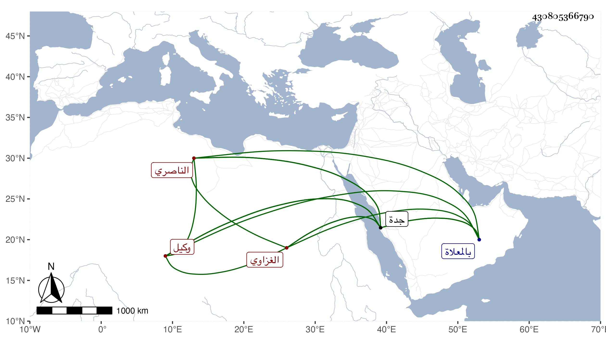

0902Sakhawi.DawLamic.ITO20230111-ara1.EIS1600.430805366790
Biography ID: 430805366790
737
أحمد الشهاب الغزاوي وكيل الخواجا الناصري . مات في آخر يوم الخميس رابع عشر شعبان سنة ثلاث وتسعين وصلى عليه بعد صبح يوم الجمعة ثم دفن بالمعلاة وهو ابن عبد الوهاب بن تقي الدين أبي بكر وخلف أخا تاجرا اسمه شعبان كان الميت يقول أن ما معه من المال له فلم يلتفتوا لذلك ولا لكونه عصبته وجاء مباشر نائب جدة شاهين الجمالي وداوداره فختموا على بيته بحضرة أخيه ثم أخذوا الأخ وجارية للميت وذهبوا بهما إلى جدة ويقال إن المغري لهم عمر النيربي لكون بينه وبين أخ الميت وحشة وزعم أنا ما مع المتوفى إنما هو للناصري فالله أعلم .
